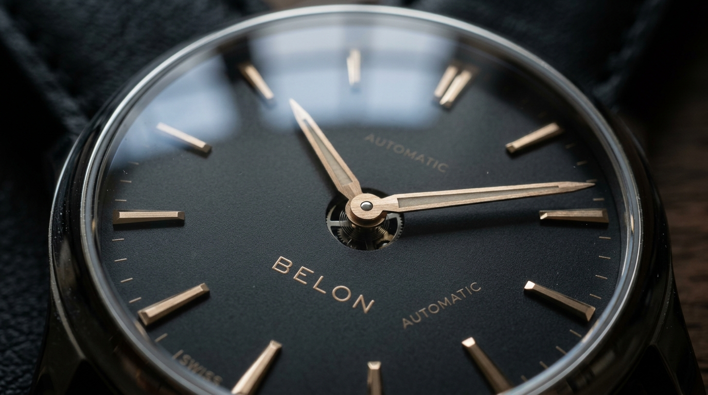
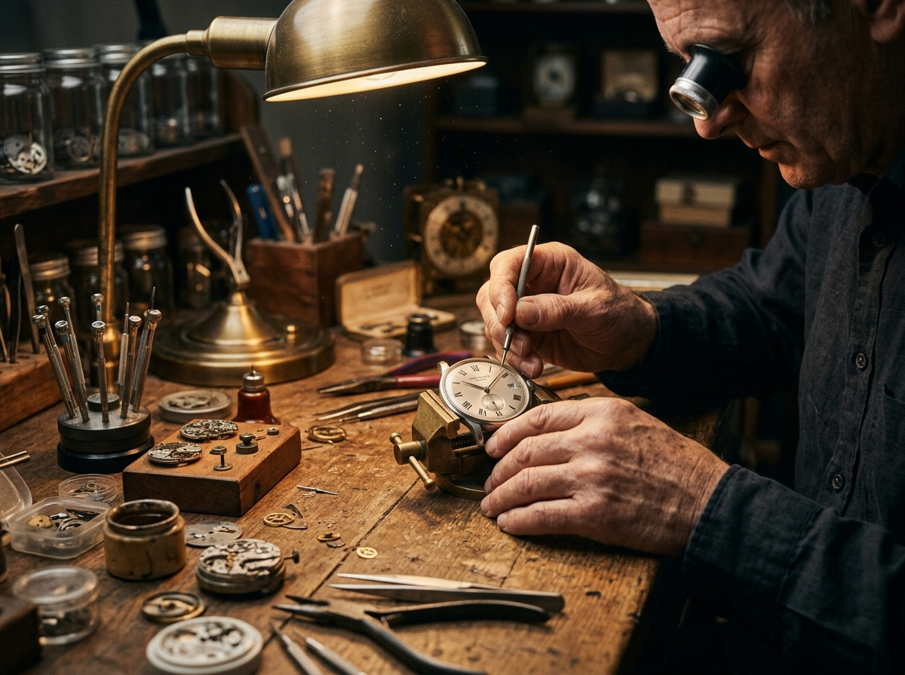

Strictly limited series of 50. Hand-finished perfection. Built for those who understand the value of resistance and pure craft.

Every dial of the Belon L'Hérétique is individually hand-lacquered in multiple stages, creating a liquid depth that cannot be replicated by industrial processes. Each caseback is hand-engraved with the ancestral crest.
"Lux Lucet in Tenebris" — The light shines in the darkness.
Belon is named in honor of our Waldensian ancestors—independent artisans, farmers, and scholars who sought sanctuary in the rugged alpine valleys. For centuries, they stood resilient, defying the Inquisition and refusing to conform to external pressures.
This indomitable spirit of defiance is forged into the essence of our watchmaking. We do not design for panels, nor do we run mass production lines. Every Belon watch is an act of defiance against commercialization: a return to small-scale horology where the artist’s hand is supreme.
In watchmaking, time is not just measured; it is encapsulated. Every scratch, polish, and custom component represents a heartbeat of undivided attention.
Traditional watchmaking is an intimate dialogue between the raw metals and the artisan. At Belon, our workbenches are sanctuaries of quiet concentration, where ancient techniques are practiced with modern precision.
Our unique lacquering process requires absolute stillness. Dust is the enemy. An single dial takes several days to finish, cure, and examine under heavy magnification. Only the flawless dials survive to be fitted in our watches.

Allocations for Series L'Hérétique are granted based on alignment with the brand's philosophy. Register your interest to connect with the founders and secure placement on our waitlist.
Thank you. Your request for allocation is now registered. We will reach out to you personally within 48 hours to schedule a consultation.